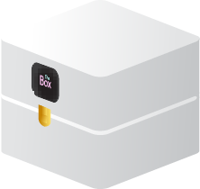
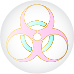

The Box
Voor u vertrekt, krijgt u gratis "The Box" via de post. Deze bevat alvast volgende voorwerpen die u zullen helpen de komende tijd.
Zelfreinigende, ademende handschoenen die u steeds hoort te dragen. Ze beschermen u tegen allerhande bacteriën en ziektes.
De sleutel naar alles! Opgelet zonder dit kleine apparaatje raakt u nergens. Het meet ook constant uw hygiëne, mentale en fysieke gezondheid en slaat deze gegevens op in uw digitaal pasport.
All-in-one schoonmaakproduct om uzelf en uw omgeving te reinigen.
“The Hair Ties” om uw haardos netjes te houden.
Contracten, instructies en alle info over hoe, waar en wanneer u wordt opgehaald om naar ”The World” te gaan.
*Deze producten zijn geacht gebruikt te worden tijdens de verplaatsing en inburgering in de nieuwe wereld. Zoniet zullen er sancties volgen.
The Cleaning
Bij aankomst in “The World” ondergaat u enkele standaardprocedures om u helemaal te reinigen en voor te bereiden op deze nieuwe wereld.
1 The Washing
U zal gespoeld, gescrubd, gezeept, gedroogd en geolied worden.
2 The Hair
Uw haar zal gewassen en bijgeknipt worden. Vervolgens zal het met gebruik van “The Hair Ties” in een strakke dot worden gedraaid.
3 The Teeth
Uw mondholte en tanden zullen grondig worden gereinigd.
4 The Detox
Vervolgens zult u worden ontgift met een detox cocktail (DX902,03).
5 The Clothes
Tot slot krijgt u de “The Clothes” aangemeten. Dit speciale maatpak reinigt zichzelf en past zich steeds aan uw lichaam en behoeftes aan. Het regelt eveneens de perfecte temperatuur.
The Ball
Nu bent u eindelijk klaar om “The World” te ontdekken. Maar eerst zult u uw voertuig toegewezen krijgen. The Ball is een stevige kunststoffen bal die u overal naartoe brengt. Voor grote afstanden kunt u ook gebruik maken van “The Tubes”, een buizennetwerk op luchtdruk die u tegen een snelheid van 300km/u vooruit stuwt.
The House
De laatste stap in de procedure: uw woonplaats. Een groot deel van de oppervlakte van "The World" is besteed aan woonzone. Dit zijn grote appartementsgebouwen die op een gridpatroon zijn geplaatst. Deze blokken zijn vervolgens opgedeeld in verschillende woningen. Per woning heb je een garage, een ontsmettingsruimte en het woongedeelte. Deze appartementen zijn allemaal 70m². Deze mogen volledig naar uw smaak worden ingericht. Eveneens beschikt u over een lucht filterende kuisrobot “The Cleaner”. Een ingebouwd UV-licht spoort al het stof en vuil op.
The Friend
Om eenzaamheid tegen te gaan hebben we de volgende oplossing: "The Friend". Dit is uw imaginary friend. U ontwerpt hem of haar helemaal naar uw wensen en kunt deze overal mee naartoe nemen. U kan kiezen tussen gewone vrienden, uw soulmate, uw constante evenbeeld en zelfs uw huisdier. Door speciale elektronische golven in "The Clothes” voelt het helemaal echt aan.
The Quarantaine
In geval van ziekte of andere hygiënische problemen, wordt u voor een onbepaalde tijd opgehaald door een "Q-Ball" en naar de "The Quarantaine" gebracht. Daar wordt u gescand, gereinigd en verzorgd zolang als nodig.
